「書楷體」啟發自Joyce 1922年出版的小說「尤利西斯」封面標題字體，中文參考楷書的骨架，重心稍高，中宮緊縮，形成古典莊重的氛圍。適合用作希臘史詩、文藝復興、古典畫冊、海報、書封等標題字使用。字體帶有人文主義、理性、俐落與沈鬱的氣質。
Script Kai
A Calligraphy Chinese Typeface
Inspiration
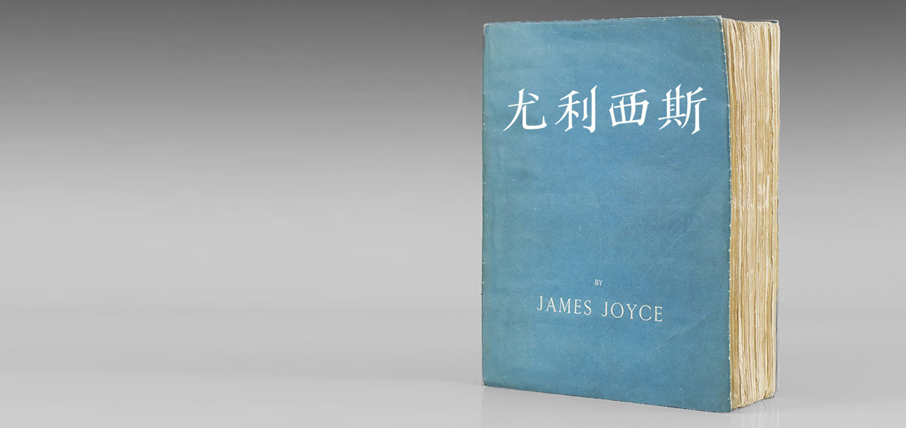
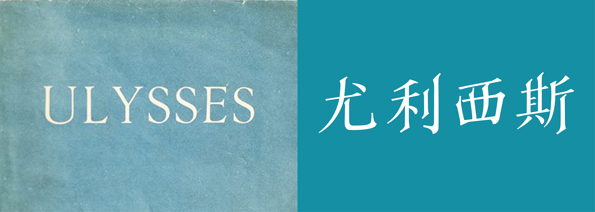
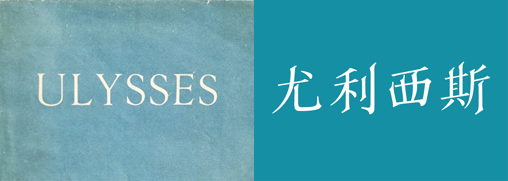
"Designer translates abstract ideas into concrete forms."
Paul Rand
從「Redesign classic books」所衍伸的字體設計，在進行「尤利西斯」背景研究時，看到1922年初版印刷的封面(fig.1)是漂亮的愛琴海藍—James Joyce親自指定的顏色，由法國巴黎的莎士比亞書店出版。 這個發現使我思考在外文書譯為中文時，書籍的封面通常會重新依不同的國家文化重新設計。但當文字創作者對於其作品的視覺呈現形式有所設計時，如何才能最大程度翻譯作家的創作？ 根據資料Joyce在世時所出版的其他語言譯本，也沒有保留初版的設計。
About Typeface
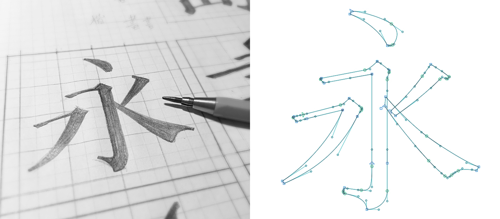
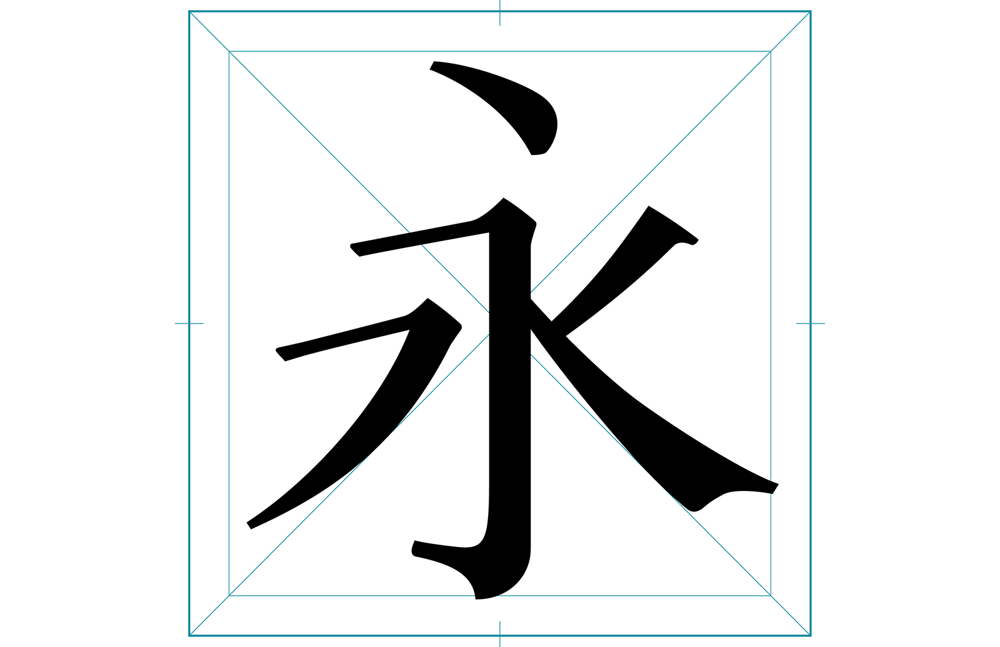
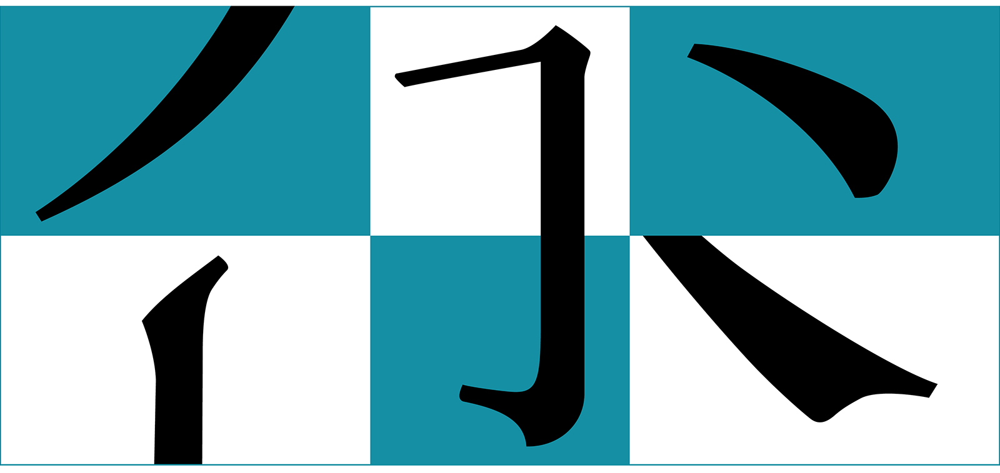
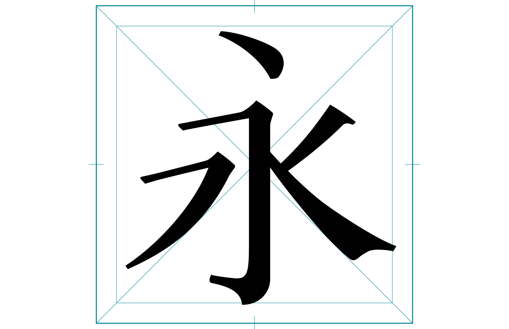
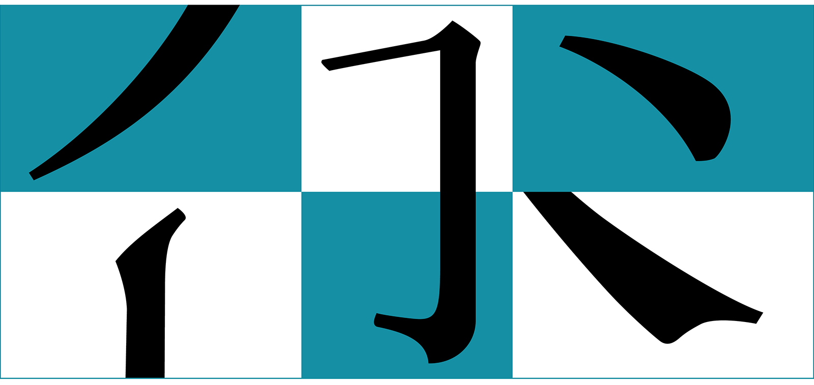
"Script Kai is a digital interpretation of the cover types of ULYSSES. In favor of a elegant and classical impression, the design of the typeface come with a strong calligraphic influence."
在技法上以楷書的骨架加上平頭筆書寫時的筆畫，而不是與原文ULYSSES的金屬字體更接近的明體， 因為楷體上斜的橫畫比明體水平垂直的筆畫更有人文氣息，也更接近Joyce的書寫風格。
造型上參考楷書的骨架，重心稍高，中宮緊縮，形成古典莊重的氛圍。加上筆畫是以西方平頭筆的書寫筆勢，起筆、收尾特意拖長的斜劃，也是「書楷體」雖為中文卻確帶有歐文感受的原因。
因此「書楷體」適合用作希臘史詩、文藝復興、古典畫冊、海報、書封等標題字使用。或是你想讓所設計的影像帶有人文主義、理性、俐落與沈鬱的氣質。
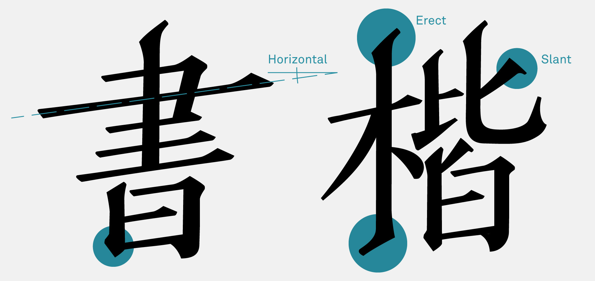
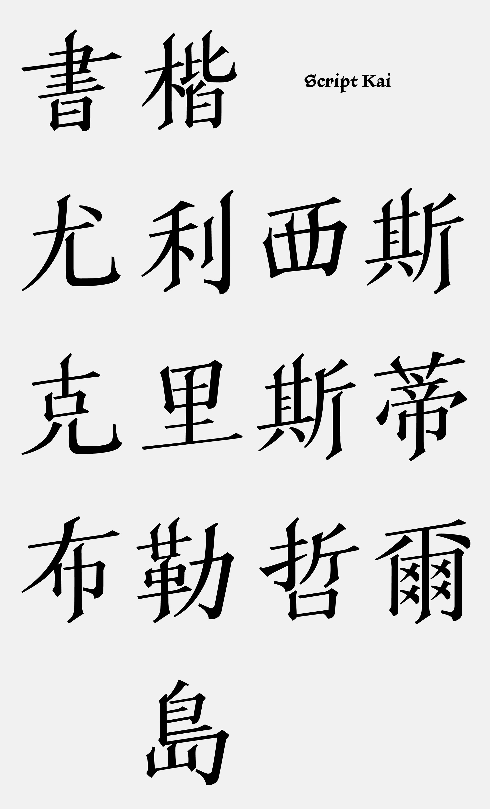
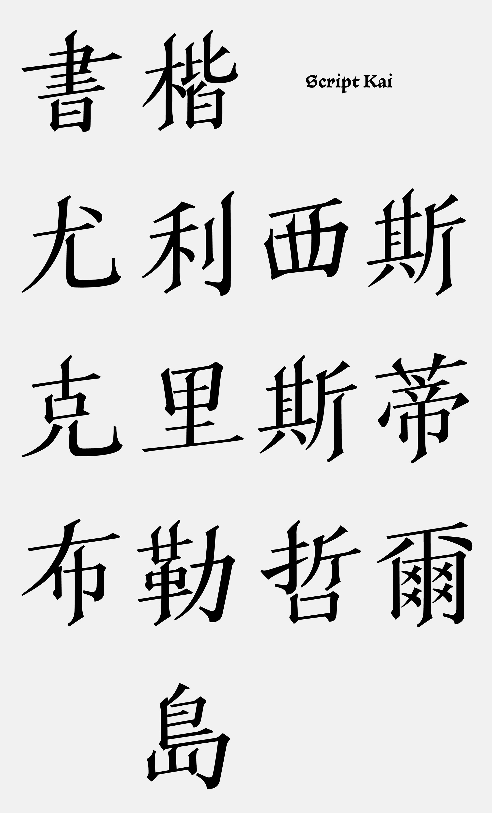
In Use
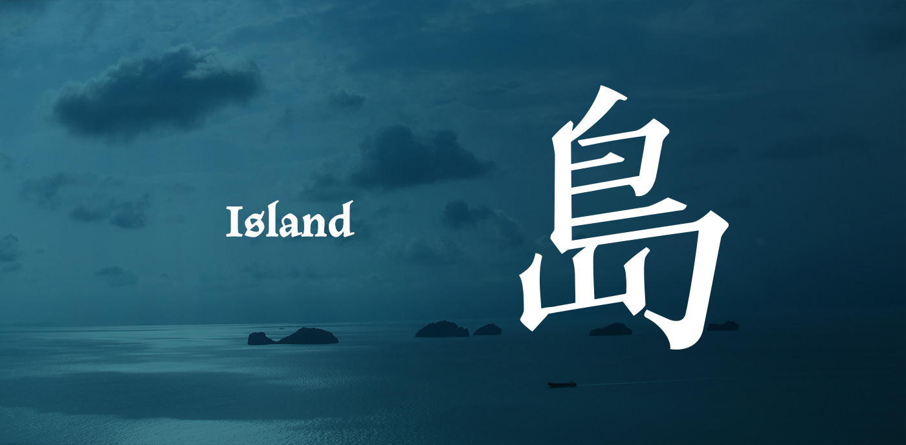
"Script Kai is well suited for display typography for posters, book covers, and many other uses where one might need western and Humanistic sense."
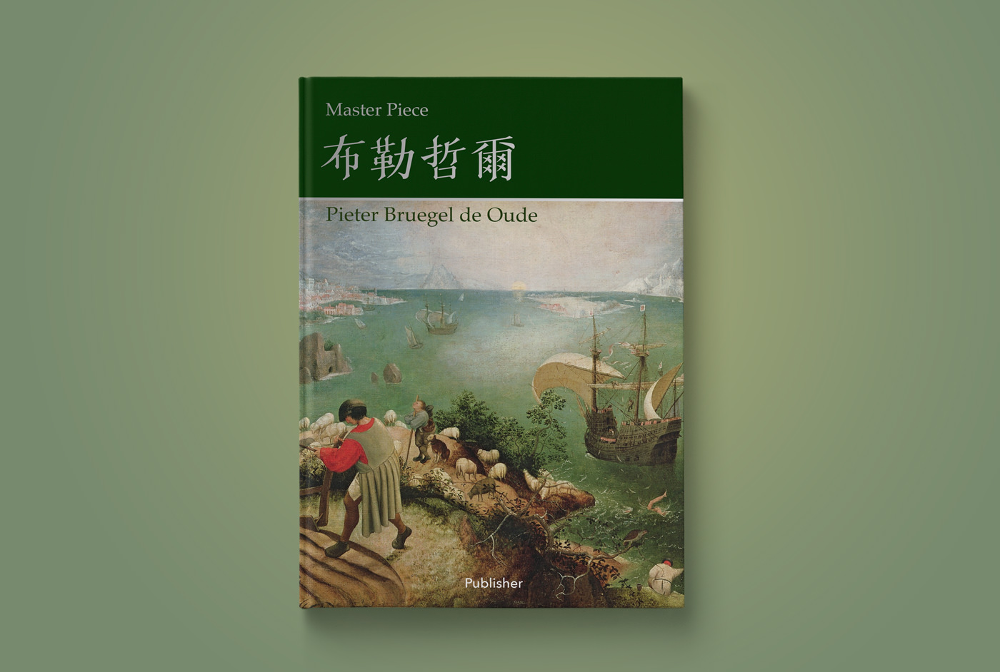
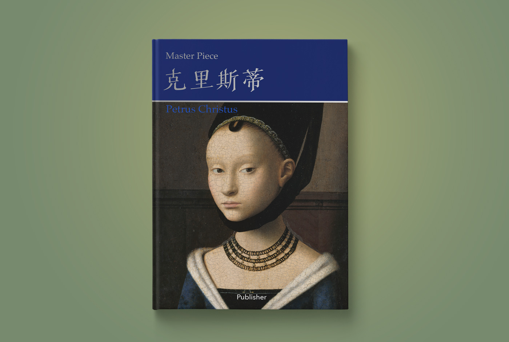
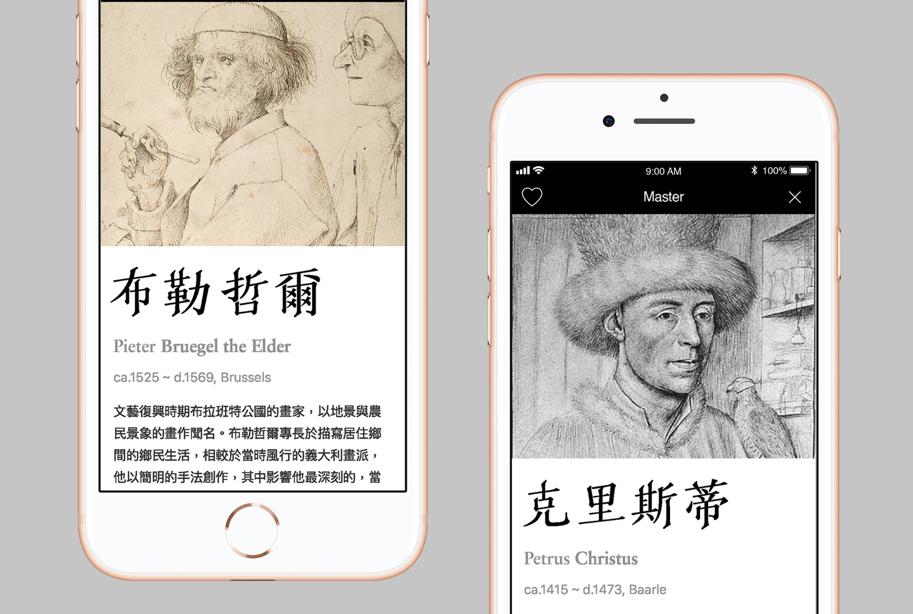
關於「島」字的衍伸—James Joyce的「尤利西斯」與荷馬的「奧德賽」平行對應，戰爭結束後，特洛伊戰爭的英雄奧德賽，航行小島遍佈的愛琴海，歷經十年考驗才返回希臘本土的家。
而範例畫冊封面一則是Bruegel的作品Landscape with the Fall of Icarus，Icarus是希臘神話中的人物，飛的太近太陽以致蠟造的翅膀融化墜海，他的翅膀是Daedalus所造，也是「尤利西斯」中其中一位主角名字的神話來源。
如果你有任何建議，或是想將這個字體應用在你的設計上，歡迎聯絡我。
-
What I do
Typography Design
Visual Design -
Type
Side Project